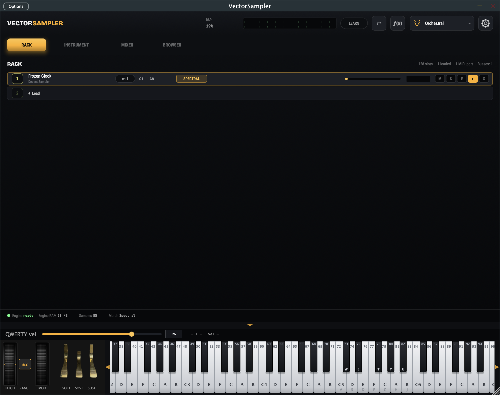
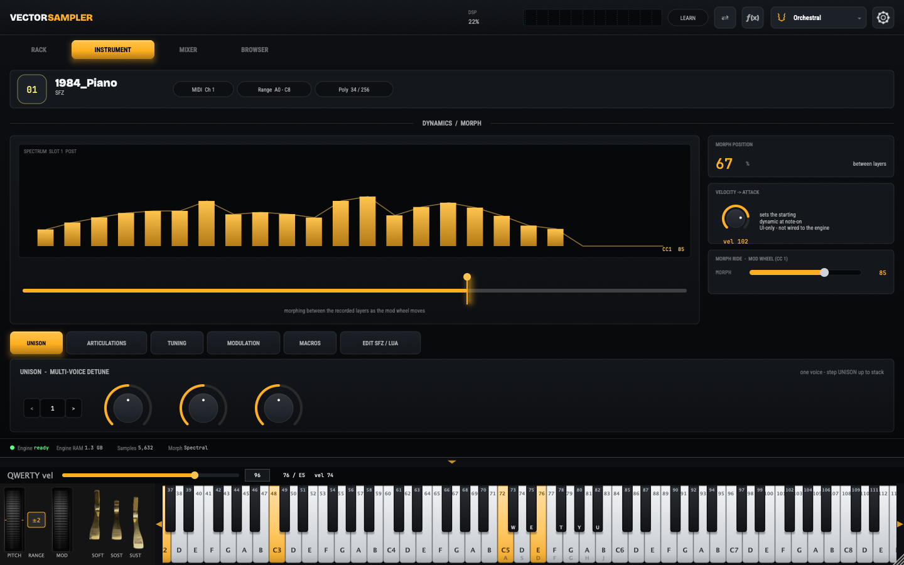
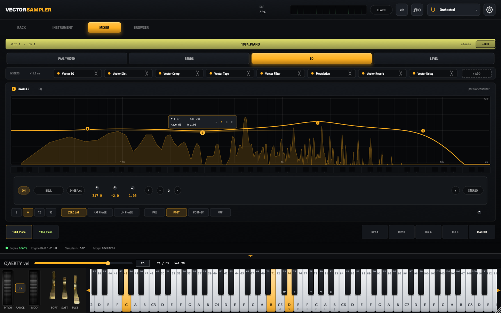
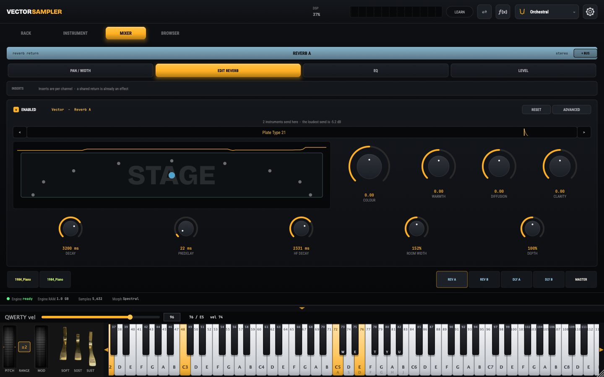
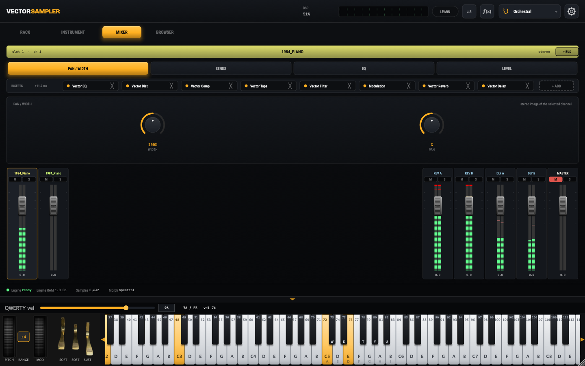

VectorSampler
A multi-timbral sample-player instrument built around a simple dissatisfaction: samplers switch between an instrument's dynamic layers, and you can hear the switch.
The Idea
A well-sampled instrument is recorded at several dynamic levels — soft, medium, hard — because a real instrument does not merely get louder as it is played harder. It changes character. The bow bites, the string rings differently, the hammer strikes with a different spectrum.
Every sampler I have used handles this the same way: it stores those layers and picks one. Play between two of them and the instrument crossfades, which mixes two different moments rather than producing the moment in between. The seam is audible, and players learn to work around it.
VectorSampler is being built to produce the tone that genuinely belongs at that dynamic, rather than a mixture of the two nearest recordings. That is the design goal the instrument exists to pursue, and the part still under active development.
The engine that does it is VectorMorph, described on its own page.
Where It Comes From
I have been making sample libraries since the Gigasampler days, and I recorded GigaPiano I and II. Decades of building libraries is decades of running into the same wall from the library side, working around a limitation that lives in the player rather than the recordings. This instrument is an attempt to fix it at the source.
Design
- Multi-timbralMultiple independent instruments in one instance, each with its own output
- SFZ playbackReads the open SFZ format, so existing libraries load directly
- Continuous layer morphingThe core research, built on the VectorMorph engine: deriving the tone between sampled dynamic layers rather than crossfading them
- Real-time safeBuilt to the same strict audio-thread rules as Larry Seyer Drums and IDA: no allocation, locking, or file access while sound is playing
- Standalone and pluginPlanned as VST3, AU, AUv3, and CLAP alongside a standalone application
Screenshots
Captured from a running build over OSC.





Included: Larry Seyer Upright Acoustic Bass
When VectorSampler is released, it will include the full version of the Larry Seyer Upright Acoustic Bass library — not the stripped-down free edition, but the complete original library I first recorded in the mid-1990s.
- The bassA classic Italian-style three-quarter-size upright made in 1817 by Guiseppe Del-Serra, set up for jazz
- The playerSpencer Starnes, a premier Austin bassist, engineer, producer and arranger
- Every note, every stringSampled in stereo at four velocities, with no loops — over 500 MB devoted to one instrument
- Release and bodyFinger-damped staccato release resonance samples on note-up, plus controllable body resonance
- Slides, riffs and moreFast and slow slides up and down all four strings from each note, plus riffs, harmonics, effects and noises
- Played through VectorMorphThe same bass that proved morphing between dynamic layers on a pitched instrument, now continuous instead of stepped
Development Status
VectorSampler is in active development as a standalone application. Work began in July 2026, and the project’s own build roadmap puts the remaining work in the musician-facing app rather than the sound engine: the morph and audio processing are settled, and what is left is wiring the rest of the interface to it. The plugin formats and other platforms are a later packaging stage.
Underway now: microtuning, with Scala scale and keyboard-mapping files per instrument slot. Still to come after that: in-app SFZ/Lua editing, a preset manager with bank and program changes, MIDI Learn, and host automation.
What’s Been Done So Far
- Multi-timbral rackUp to 128 instrument slots, each loading its own instrument, with a freely assignable MIDI channel per slot so several slots can play together as a stack
- Output routing and bussesUp to 16 user busses, with slots routed to busses and busses to the master
- UnisonStacked, detuned voices per slot with voice count, detune, blend and stereo width
- Insert effectsThe Vector engines as inserts on every channel: EQ, distortion, compression, tape, filter, modulation, reverb and delay
- Reverb and sendsFour shared effect returns fed from each channel’s sends
- Modulation and macrosA modulation matrix and macro knobs per instrument
- ArticulationsArticulations kept separate and switched, never morphed across
- MeteringPeak and LUFS metering
- Morphing on pitched instrumentsMorphing between recorded dynamic layers verified clean on a real melodic instrument, an upright acoustic bass, after first being proven on drums in Larry Seyer Drums
Part of the Family
VectorSampler is the instrument in the LOUIS suite, sharing its morphing approach with the effects plugins and its real-time architecture with Larry Seyer Drums and IDA.
Licensing
VectorSampler will be commercial, proprietary software — licensed, not sold. Its source is not publicly available. Music you make with it will be yours, with no royalty owed on it.